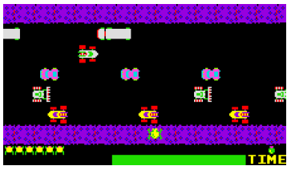

Home Page
F.A.Qs
Statistical Charts
Past Contests
Scheduled Contests
Award Contest
| Online Judge | Problem Set | Authors | Online Contests | User | ||||||
|---|---|---|---|---|---|---|---|---|---|---|
| Web Board Home Page F.A.Qs Statistical Charts | Current Contest Past Contests Scheduled Contests Award Contest | |||||||||
|
Language: Frogger
Description “Frogger” was one of the first really popular arcade games after it was introduced by SEGA in 1981. The game consists of helping a frog cross a multi-lane motorway without getting run over by a car. You are given a view of an n-lane motorway where each lane consists of m different spaces that can either be empty or be occupied by a car. On each side of the motorway is a curb on which the frog can move freely. In the traffic lanes the frog can only move on the spaces not occupied by cars. The motorway s constructed in such a way that the direction in which the cars travelalternates between the lanes, with cars in the first lane (the one closest to the starting point of the frog) moving to the right. The cars never switch lanes and only move one step forward in each turn. To ensure a steady supply of traffic, a car that reaches the boundary of its lane is reentered at the opposite end of its lane.
 In one turn of the game all the cars move one step in their assigned direction while the frog can either move one step to the right or to the left, or one step up or down (between lanes or between the curb and the adjoining lane), or it can stand still. Contrary to the cars the frog cannot “wrap-around” i.e. move in one step between the first and last position of a lane or a curb. The frog and the cars move simultaneously. Thus the frog can move to a space given that there will be no car on it in the next round. If the frog is on the same space at the same time as a car it is run over and dies. Note that the frog can jump over an adjacent approaching car in the same lane as itself. Your job is to write a computer program that will calculate the minimum number of turns needed for the frog to get from its starting position on the curb to its final position on the curb on the other side of the road or to determine that this is not possible within a given number of rounds. Input First there will be a line containing the number of scenarios you are asked to help the frog in. For each scenario there will first be a line containing a positive integer x ≤ 105 giving the maximum number of rounds that can be used. The next line contains the number of lanes n, 1 ≤ n ≤ 20, and the length of each lane m, 1 ≤ m ≤ 50. Each of the next n + 2 lines will contain a string of m characters. The character X indicates a car, the character O (letter O) indicates a free space, the character F gives the starting position of the frog, and the character G gives the final destination of the frog. The first line indicates the destination curb, consisting of O’s and exactly one G while the last line gives the starting curb consisting of O’s and exactly one F, while the intermediate lines each represent one lane of the motorway. Output The output will be one line per scenario, either giving the minimum number of turns needed before the frog can get from its starting position to the final position without getting run over by a car or a statement indicating that this was not possible within the maximum number of allowed turns. Sample Input 2 10 4 4 OOGO XXOO XOOX XXOO XXOO OOFO 2 2 2 OG XX OO FO Sample Output The minimum number of turns is 9. The problem has no solution. Source |
[Submit] [Go Back] [Status] [Discuss]
All Rights Reserved 2003-2013 Ying Fuchen,Xu Pengcheng,Xie Di
Any problem, Please Contact Administrator